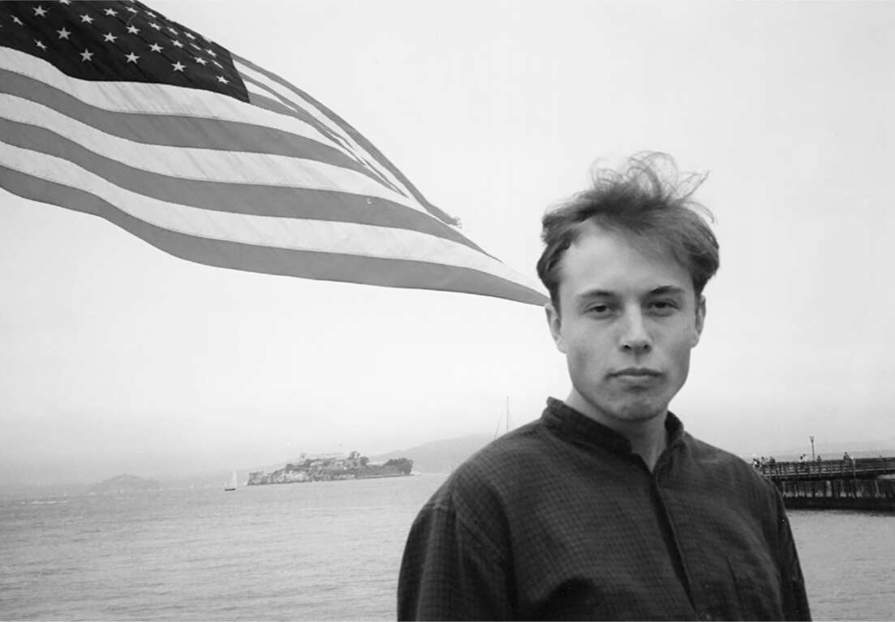
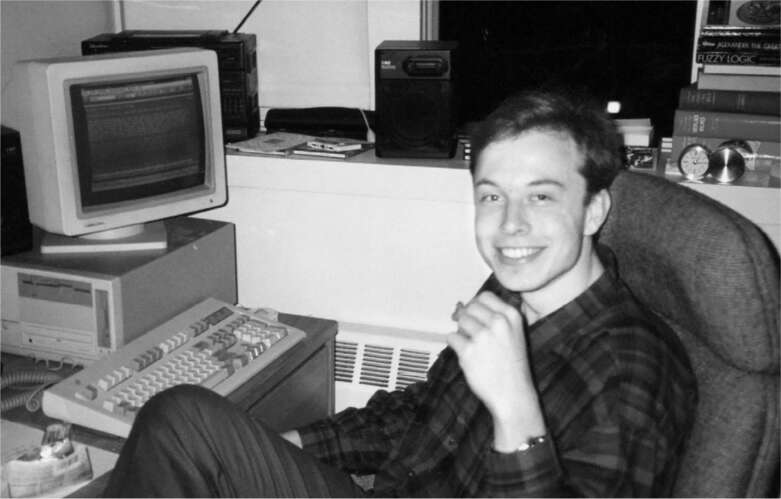

Thực tập sinh mùa hè
Tại các trường thuộc Ivy League vào những năm 1990, những sinh viên đầy tham vọng bị lôi kéo về phía đông đến vương quốc vàng son của ngân hàng Phố Wall hoặc về phía tây đến chủ nghĩa không tưởng công nghệ và lòng nhiệt huyết kinh doanh của Thung lũng Silicon. Tại Penn, Musk đã nhận được một số lời mời thực tập từ Phố Wall, tất cả đều béo bở, nhưng tài chính không khiến anh hứng thú. Anh cảm thấy rằng các nhân viên ngân hàng và luật sư không đóng góp nhiều cho xã hội. Bên cạnh đó, anh không thích những sinh viên mà anh gặp trong các lớp kinh doanh. Thay vào đó, anh bị thu hút bởi Thung lũng Silicon. Đó là thập kỷ của sự hưng phấn lý trí, khi người ta có thể chỉ cần gắn.com vào bất kỳ ý tưởng nào và chờ đợi những chiếc Porsche từ Sand Hill Road ầm ầm kéo đến với các nhà đầu tư mạo hiểm vẫy gọi tấm séc.
Anh ấy đã có cơ hội vào mùa hè năm 1994, giữa năm thứ ba và năm cuối tại Penn, khi anh ấy đạt được hai vị trí thực tập cho phép anh ấy thỏa mãn niềm đam mê của mình với xe điện, không gian và trò chơi điện tử.
Ban ngày, anh làm việc tại Viện Nghiên cứu Pinnacle, một nhóm nhỏ gồm hai mươi người, nhận các hợp đồng khiêm tốn từ Bộ Quốc phòng để nghiên cứu về "siêu tụ điện" do người sáng lập phát triển. Tụ điện là một thiết bị có thể giữ điện tích trong thời gian ngắn và phóng điện nhanh chóng, và Pinnacle tin rằng họ có thể chế tạo một loại tụ điện đủ mạnh để cung cấp năng lượng cho ô tô điện và vũ khí không gian. Trong một bài báo viết vào cuối mùa hè, Musk tuyên bố: “Điều quan trọng cần lưu ý là Siêu tụ điện không chỉ là một cải tiến nhỏ, mà là một công nghệ hoàn toàn mới.”
Buổi tối, anh làm việc tại một công ty nhỏ ở Palo Alto tên là Rocket Science, chuyên sản xuất trò chơi điện tử. Khi anh xuất hiện tại tòa nhà của họ một đêm và xin việc làm hè, họ đã giao cho anh một vấn đề mà họ chưa thể giải quyết: làm thế nào để khiến máy tính thực hiện đa nhiệm bằng cách đọc đồ họa được lưu trữ trên CD-ROM đồng thời di chuyển nhân vật trên màn hình. Anh đã lên các diễn đàn internet để hỏi những hacker khác cách bỏ qua BIOS và đầu đọc cần điều khiển bằng DOS. “Không một kỹ sư cao cấp nào có thể giải quyết vấn đề này, và tôi đã giải quyết nó trong hai tuần,” anh nói.
Họ rất ấn tượng và muốn anh làm việc toàn thời gian, nhưng anh cần tốt nghiệp để có được thị thực làm việc tại Hoa Kỳ. Ngoài ra, anh nhận ra một điều: anh rất yêu thích trò chơi điện tử và có kỹ năng để kiếm tiền từ việc tạo ra chúng, nhưng đó không phải là cách tốt nhất để sống. “Tôi muốn tạo ra nhiều ảnh hưởng hơn,” anh nói.
Một xu hướng đáng tiếc trong những năm 1980 là ô tô và máy tính trở thành những thiết bị kín mít. Có thể mở và mày mò bên trong chiếc Apple II mà Steve Wozniak thiết kế vào cuối những năm 1970, nhưng bạn không thể làm điều đó với Macintosh, mà Steve Jobs vào năm 1984 đã làm cho gần như không thể mở ra. Tương tự, trẻ em trong những năm 1970 và trước đó lớn lên với việc lục lọi dưới nắp capo ô tô, mày mò bộ chế hòa khí, thay bugi và tăng công suất động cơ. Chúng có cảm giác rất rõ về van và dầu Valvoline. Tư duy thực hành và bộ dụng cụ Heathkit này thậm chí còn áp dụng cho radio và tivi; nếu muốn, bạn có thể thay ống, sau đó là bóng bán dẫn và hiểu được cách mạch hoạt động.
Xu hướng hướng tới các thiết bị đóng kín này đồng nghĩa với việc hầu hết các chuyên gia công nghệ trưởng thành trong những năm 1990 bị thu hút bởi phần mềm hơn là phần cứng. Họ chưa bao giờ biết mùi thơm của mỏ hàn, nhưng họ có thể viết mã theo cách khiến các mạch điện hoạt động. Musk thì khác. Anh thích cả phần cứng lẫn phần mềm. Anh có thể viết mã, nhưng anh cũng có hiểu biết về các thành phần vật lý, chẳng hạn như pin và tụ điện, van và buồng đốt, bơm nhiên liệu và dây curoa quạt.
Đặc biệt, Musk thích mày mò ô tô. Vào thời điểm đó, anh sở hữu một chiếc BMW 300i đã hai mươi năm tuổi, và anh dành những ngày thứ Bảy để lục lọi các bãi phế liệu ở Philadelphia để tìm kiếm các bộ phận cần thiết để nâng cấp nó. Nó có hộp số bốn cấp, nhưng anh quyết định nâng cấp khi BMW bắt đầu sản xuất hộp số năm cấp. Mượn cầu nâng tại một gara sửa chữa địa phương, anh đã có thể, với một vài miếng đệm và một chút mài dũa, lắp được hộp số năm cấp vào chiếc xe vốn chỉ có bốn cấp. “Nó thực sự có thể chạy rất nhanh,” anh nhớ lại.
Hè năm 1994, sau kỳ thực tập, Elon và Kimbal lái xe từ Palo Alto về Philadelphia. Kimbal nhớ lại: "Cả hai đứa đều nghĩ đại học chán òm, chẳng việc gì phải vội vàng quay lại, nên chúng tôi đã có một chuyến road trip ba tuần." Chiếc xe liên tục hỏng hóc. Có lần, họ đưa được xe đến một đại lý ở Colorado Springs, nhưng sau khi sửa xong, xe lại hỏng. Vậy là họ đẩy xe đến một trạm dừng xe tải, nơi Elon đã tự mình sửa lại mọi thứ mà thợ máy chuyên nghiệp đã làm.
Musk cũng lái chiếc BMW đi du lịch cùng Jennifer Gwynne, bạn gái thời đại học. Kỳ nghỉ Giáng sinh năm 1994, họ lái xe từ Philadelphia đến Đại học Queen’s, nơi Kimbal vẫn đang học, rồi đến Toronto thăm mẹ anh. Tại đó, anh tặng Jennifer một chiếc vòng cổ vàng nhỏ đính ngọc lục bảo trơn nhẵn. "Mẹ anh ấy có một vài chiếc vòng cổ như vậy trong một chiếc hộp ở phòng ngủ, và Elon nói với tôi rằng chúng đến từ mỏ ngọc lục bảo của cha anh ở Nam Phi - anh ấy đã lấy một chiếc từ trong hộp," Jennifer kể lại 25 năm sau, khi cô bán đấu giá nó trên mạng. Thực tế, mỏ đã phá sản từ lâu, không ở Nam Phi và cũng không thuộc sở hữu của cha anh, nhưng lúc đó Musk không ngại tạo ấn tượng như vậy.
Tốt nghiệp mùa xuân năm 1995, Musk quyết định thực hiện một chuyến đi xuyên quốc gia khác đến Thung lũng Silicon. Anh đưa Robin Ren đi cùng, sau khi dạy anh ấy lái xe số sàn. Họ dừng chân tại sân bay Denver vừa mới khai trương vì Musk muốn xem hệ thống xử lý hành lý. "Anh ấy bị mê hoặc bởi cách họ thiết kế những cỗ máy robot xử lý hành lý mà không cần sự can thiệp của con người", Ren nói. Nhưng hệ thống lại rối tung lên. Musk đã rút ra một bài học mà anh sẽ phải học lại khi xây dựng các nhà máy Tesla tự động hóa cao. "Nó bị tự động hóa quá mức, và họ đã đánh giá thấp độ phức tạp của thứ mà họ đang xây dựng", anh nói.
Musk dự định theo học tại Stanford vào cuối mùa hè để học ngành khoa học vật liệu ở bậc cao học. Vẫn bị mê hoặc bởi tụ điện, anh muốn nghiên cứu cách chúng có thể cung cấp năng lượng cho ô tô điện. "Ý tưởng là tận dụng thiết bị sản xuất chip tiên tiến để tạo ra một siêu tụ điện thể rắn với mật độ năng lượng đủ để cung cấp cho xe phạm vi hoạt động dài", anh nói. Nhưng khi gần đến ngày nhập học, anh bắt đầu lo lắng. "Tôi nghĩ mình có thể dành vài năm ở Stanford, lấy bằng tiến sĩ, và kết luận của tôi về tụ điện sẽ là chúng không khả thi", anh nói. "Hầu hết các bằng tiến sĩ đều không liên quan. Số lượng thực sự tạo ra sự khác biệt gần như bằng không."
Lúc đó, anh đã hình thành một tầm nhìn cuộc sống mà anh sẽ lặp lại như một câu thần chú. "Tôi đã nghĩ về những điều sẽ thực sự ảnh hưởng đến nhân loại", anh nói. "Tôi đã đưa ra ba điều: internet, năng lượng bền vững và du hành vũ trụ." Vào mùa hè năm 1995, anh nhận ra rằng điều đầu tiên trong số này, internet, sẽ không chờ anh học xong cao học. Mạng internet vừa được mở cửa cho mục đích thương mại, và tháng 8 năm đó, công ty khởi nghiệp trình duyệt Netscape đã lên sàn chứng khoán, tăng vọt trong vòng một ngày lên giá trị thị trường 2,9 tỷ đô la.
Trong năm cuối tại Penn, Musk nảy ra ý tưởng về một công ty internet sau khi nghe một giám đốc của NYNEX trình bày về kế hoạch ra mắt phiên bản trực tuyến của Sách Vàng. Vị giám đốc này cho biết, dự án có tên "Big Yellow" sẽ có các tính năng tương tác để người dùng có thể tùy chỉnh thông tin theo nhu cầu cá nhân. Musk nghĩ rằng (và hóa ra là đúng) NYNEX hoàn toàn không biết cách làm cho nó thực sự tương tác. Anh đề nghị với Kimbal: "Sao chúng ta không tự làm?", và bắt đầu viết mã kết hợp danh sách doanh nghiệp với dữ liệu bản đồ. Họ đặt tên cho nó là Virtual City Navigator.
Ngay trước hạn đăng ký nhập học Stanford, Musk đến Toronto để xin lời khuyên từ Peter Nicholson của Scotiabank. Anh nên theo đuổi ý tưởng Virtual City Navigator hay bắt đầu chương trình tiến sĩ? Nicholson, người có bằng tiến sĩ từ Stanford, đã không do dự. "Cuộc cách mạng internet chỉ đến một lần trong đời, hãy nắm bắt cơ hội khi còn nóng hổi", ông nói với Musk khi họ đi dọc bờ hồ Ontario. "Cậu sẽ có nhiều thời gian để học cao học sau này nếu vẫn còn hứng thú." Khi trở lại Palo Alto, Musk nói với Ren rằng anh đã quyết định. "Tôi cần tạm gác mọi thứ lại", anh nói. "Tôi cần bắt kịp làn sóng internet."
Thực ra, anh đã chọn giải pháp an toàn. Anh chính thức đăng ký vào Stanford và ngay lập tức xin hoãn nhập học. "Tôi đã viết một số phần mềm với bản đồ internet và danh bạ Sách Vàng đầu tiên", anh nói với Bill Nix, giáo sư khoa học vật liệu. "Tôi có thể sẽ thất bại, và nếu vậy, tôi muốn quay lại." Nix nói rằng việc Musk hoãn học không thành vấn đề, nhưng ông dự đoán anh sẽ không bao giờ quay lại.

Tháng 7 năm 1994

Tháng 5 năm 1995